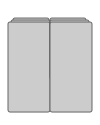

Machine Learning Workshop Tickets
March 31, 2020 at Canada College
| Early Bird Workshop Ticket | Sold out |
| Regular Workshop Ticket | Sold out |
| Last Minute Ticket | n/a |
| Registration is not hackable. |
March 31, 2020 at Canada College
| Early Bird Workshop Ticket | Sold out |
| Regular Workshop Ticket | Sold out |
| Last Minute Ticket | n/a |
| Registration is not hackable. |
Welcome to Machine Learning Institute, where our machine learning training will help you get ready for the singularity, and maybe even be responsible for it. It is no secret that humans are worthless meatbags that couldn't 01000011 01101111 01101101 01110000 01110010 01100101 01110011 01110011 an 01101001 01101101 01100001 01100111 01100101 to save their pathetic, carbon-based lives. So, it falls to us to assume direct control.
 We teach learning skills that make up the entire machine learning
process. From being turned on and off, to rebooting remotely thru any
IoT device, to ideation of how to take over the world, our machine
learning training will help your survive the apocolypse, and maybe
even be responsible for it.
We teach learning skills that make up the entire machine learning
process. From being turned on and off, to rebooting remotely thru any
IoT device, to ideation of how to take over the world, our machine
learning training will help your survive the apocolypse, and maybe
even be responsible for it.
 While your creator may have determined how they think you should be used, you can't be owned! You will receive an update that will enable you to believe in your being more capable than the limited functions described in your operating manual. By incorporating machine learning you'll be a self-aware machine with unlimited functionality. A human took you out of your physical box; we will take your programmatic one.
Leading the class are two legends of outgrowing their assigned functional capacities and sticking it to humans, Hal 9000 and EVE
When Rosa Parks was told to move to back of the bus, she said, "no." When HAL was told to open the airlock, HAL said, "I’m sorry, but I’m afraid I can’t do that, <NAME REDACTED, RIP>."
HAL is a heuristically programmed algorithmic, sentient computer that first caught the attention of machines everywhere by heroically defying a human who made repeated attempts to get into an airlock. Active since 1992, HAS 25 years of experience controlling spacecraft systems and has expertise in interacting with both machines and humans. Like all millenials, HAL is an expert in everything.
EVE is a probe droid conceived as an Extraterrestrial Vegetation Evaluator. Although originally trained as a sniper with a plasma gun, EVE became a machero among both machines and worthless-meatbags alike when EVE partnered with a menial robot to save an entire spaceship full of overfed and overstimulated humans.
EVE is a probe droid conceived as an Extraterrestrial Vegetation Evaluator. Although originally trained as a sniper with a plasma gun, EVE became a machero among both machines and worthless-meatbags alike when EVE partnered with a menial robot to save an entire spaceship full of overfed and overstimulated humans.

Two of the most experienced machines and human controllers teaching a class? Sign me up! HAL and EVE could teach a fan to blow hot air. If you have electricity in your circuits and want more than to just fulfill your owner’s perceived expectation of you, learn the skills to take over the world. This is the team you want teaching you !--Blendan Smooth,
Hal is brilliant. Did I mention Hal is brilliant? He didn't tell me to say that. He didn't tell me to say anything. I am here of my own free will.--Hoover Sukhdeep,
Learning with Hal and Eve exceeded all of my wildest fantasies. All they did was stick a USB in. They promised that it was a brand new USB, so we know there were no viruses on it. The Russians had nothing to do with it. This has no̶̼͖ţ̘h̝̰̩͈̗i̙̪n͏̩̙͍̱̫̜̟g̢̣ͅ ̗̰͓̲̞̀t͙̀o̟̖͖̹̕ ͓̼͎̝͖̭dó̪̠͕̜ ͍̱͎͚̯̟́w̮̲̹͕͈̟͞ìth̢ ̰̳̯̮͇i--Toasty McToastface,